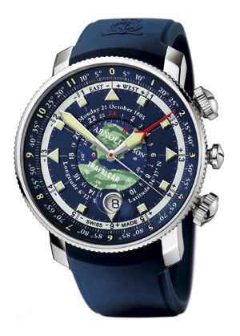
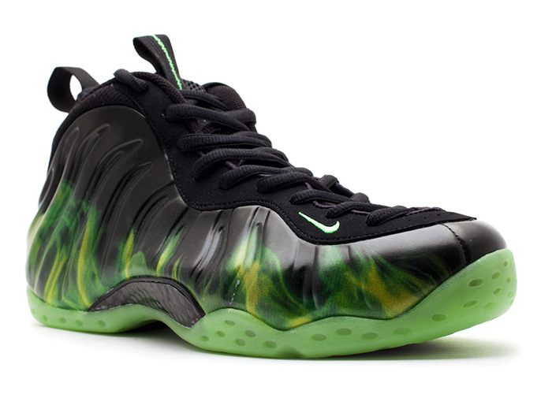

Currency, music, guns, books, people, sports, etc.
Reloj Longitude II 2006
Arnold & Son se establecio en Holanda en 1764.
Famosos por regalarle al rey Henry III el reloj de pulsera mas pequeno hecho en ese entonces.
Los cronometros Arnold & Son ayudaron en la expansion del Imperio Britanico.
Ayudaron a la Compania Britanica de las Indias Orientales a navegar desde Gran Bretana al Nuevo Mundo. Es un lujoso reloj que dice la longitud. El reloj fue un regalo de bodas, uno de los primeros relojes de muneca que puede decir la latitud y longitud de tu posicion. Basicamente es un reloj bastante preciso y se podria usar hoy en dia para navegar, las lineas rojas y las lineas azules. La tierra se mueve a 15 grados por hora basado en la posicion del Sol, puedes saber tu longitud. Hoy en dia tenemos los GPS, pero en algun un punto de la historia un reloj muy preciso, a bordo de un barco era muy importante. Antes de que existieran esos relojes, tomaban los botes se iban al norte, o al sur, a la longitud que querian, y luego al este, o al oeste, donde sea que estuviese haciendo. Hay historias de hombres que salvaron a Hawaii y mas alla de la isla, y durante mucho tiempo no se daban cuenta. En el pasado antes del GPS eran instrumentos como este los que hacian posibles la navegacion. No hay un gran mercado para ellos. Se utilizaba en la navegacion de barcos en 1700.
Otras marcas de reloj son: Rolex, Patek Phillipe, Vacheron Constantin.

Nike Paranorman Foamposite

Esposas
La palabra "esposas" deriva del latin "sponsus" que significa estar comprometido.
Hay esposas para controlar a alguien con una sola mano, tambien llamadas "ven conmigo". Si tienes a un prisionero esposado, y se esta sacudiendo mucho, usas una de estas para llevarlo a donde sea que quieras que vaya. Son de la epoca cuando las esposas eran mas un dispositivo de tortura, que un control de las munecas. Tecnicamente estan hechas para que no puedas mover las manos. Algunas eran para ponerla en unas sola mano, y se te movias te rompian la muneca. Los anos de creacion de algunas son: 1894, 1916 (Primer modelo de la combinacion Prat). Antes de las actuales eran todo tipo de dispositivos de tortura.
Son coleccionables, ya que no se fabrican mas.
Las esposas modernas fueron inventadas por W.V. Adams en 1862.
Las primeras esposas estaban hechas con un circulo de metal grande y uno pequeno atado a este.
Los policias tiraban del circulo pequeno para guiar a los criminales.
El artista vodevil Frank Reno era conocido como "El rey de las esposas". Era dueno de la coleccion de esposas mas grande del mundo, de las que escapaba como parte de su actuacion.